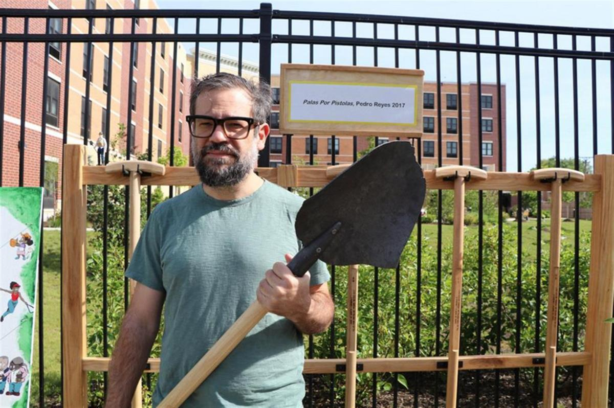
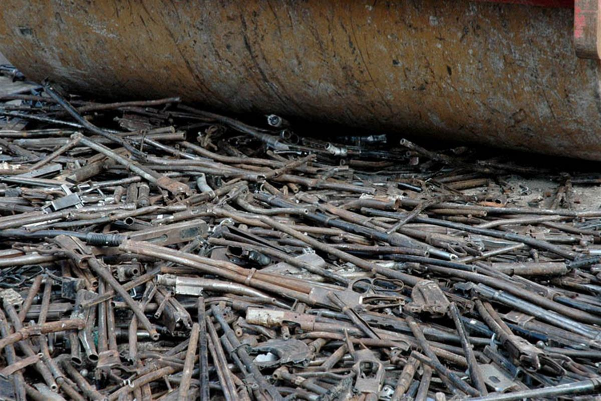
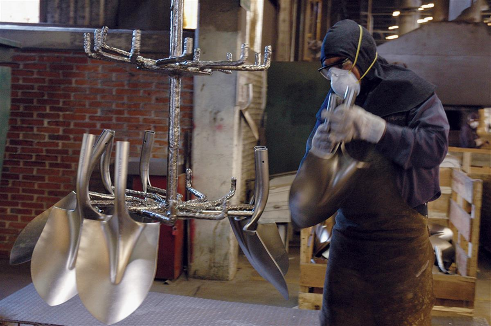
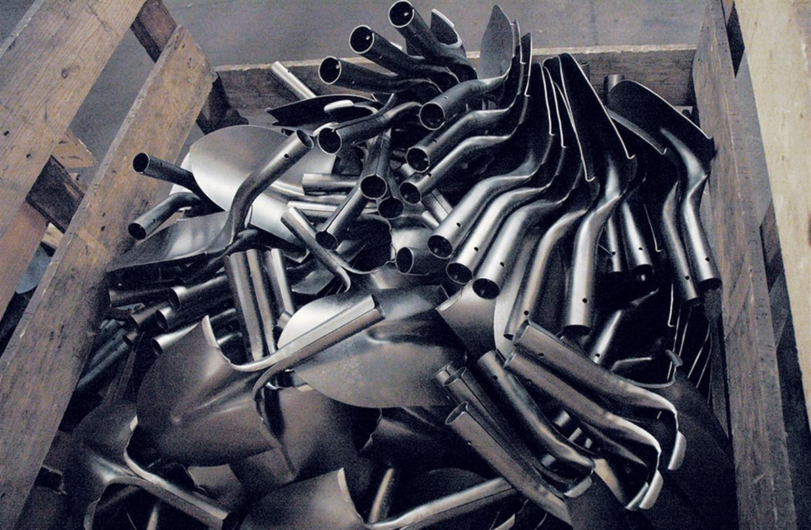
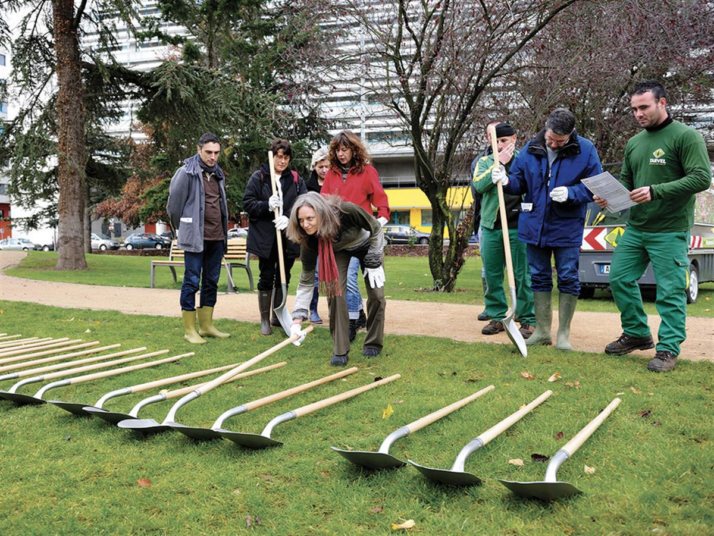
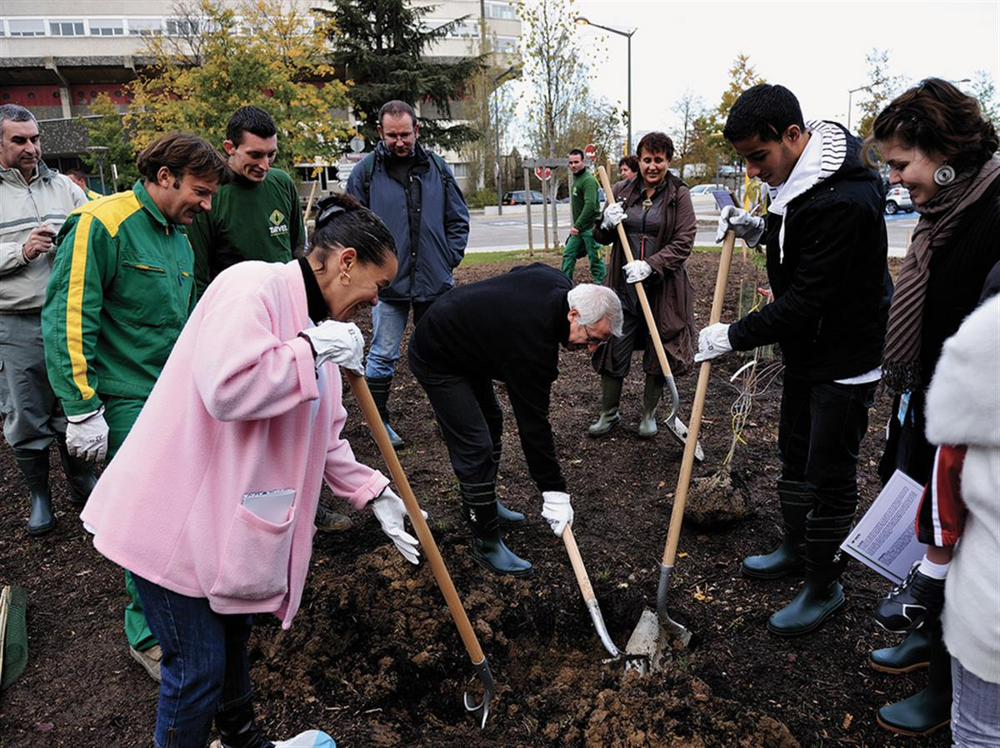
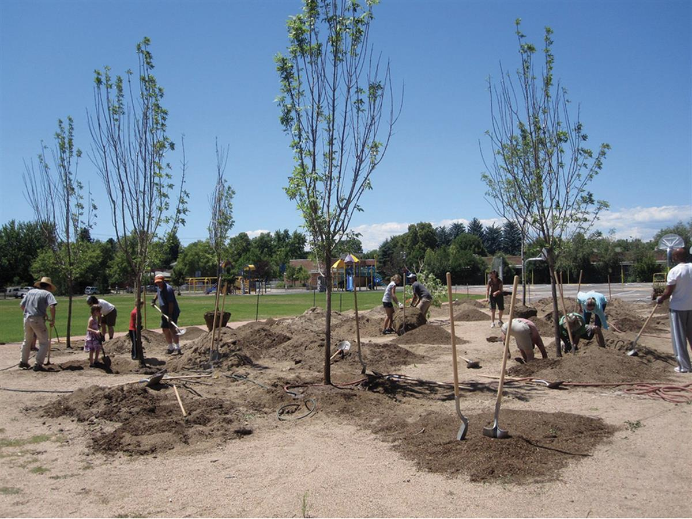

Pedro Reyes is showing how an object used for harm can be molded into one that promotes life in a project titled “Palas por Pistolas.” Reyes, who originally is from Mexico City, collected 1,527 guns from the Culiacán area in Mexico. The project offered those who gave up their weapons, which were steamrolled publicly and melted, an exchange for a coupon that allowed them to buy electronics and appliances. Reyes used materials from the weapons to create shovels that were then used for planting trees. Since its completion, public schools and art institutions—from the Vancouver Art Gallery to the San Francisco Art Institute to the Maison Rouge in Paris—have received the shovels for community members to use. We have previously marveled at Reyes’ projects involving guns turned into instruments. Find more of Reyes’s work here. (via Intelligent Living)

Pedro Reyes holds one of the shovels made from melted guns. Credit: Evan Garcia / WTTW






SOURCE: COLOSSAL